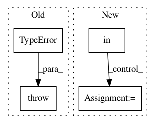

e37538b338c88a70ccbf14c2a783126fd2564f68,src/biotite/structure/io/general.py,,load_structure,#Any#Any#,18
Before Change
return file.get_structure(template)
elif suffix == ".xtc":
if template is None:
raise TypeError("Template must be specified for trajectory files")
from .xtc import XTCFile
file = XTCFile()
file.read(file_path)
return file.get_structure(template)
After Change
return array[0]
else:
return array
elif suffix in [".trr", ".xtc", ".tng", ".dcd", ".netcdf"]:
if template is None:
raise TypeError("Template must be specified for trajectory files")
from .trr import TRRFile
from .xtc import XTCFile
from .tng import TNGFile
from .dcd import DCDFile
from .netcdf import NetCDFFile
if suffix == ".trr":
traj_file_cls = TRRFile
if suffix == ".xtc":
traj_file_cls = XTCFile
if suffix == ".tng":
traj_file_cls = TNGFile
if suffix == ".dcd":
traj_file_cls = DCDFile
if suffix == ".netcdf":
traj_file_cls = NetCDFFile
file = traj_file_cls()
file.read(file_path)
return file.get_structure(template)
else:
In pattern: SUPERPATTERN
Frequency: 3
Non-data size: 4
Instances
Project Name: biotite-dev/biotite
Commit Name: e37538b338c88a70ccbf14c2a783126fd2564f68
Time: 2019-03-08
Author: patrick.kunzm@gmail.com
File Name: src/biotite/structure/io/general.py
Class Name:
Method Name: load_structure
Project Name: nipy/dipy
Commit Name: 014decc24e6bbb05e4383170da2cadc0f2cba973
Time: 2019-12-16
Author: francois.m.rheault@usherbrooke
File Name: dipy/io/stateful_tractogram.py
Class Name: StatefulTractogram
Method Name: __init__
Project Name: OpenMined/Grid
Commit Name: 46b03dae5a8333a38c072da8e541da6fe5c0912d
Time: 2018-04-10
Author: jason@manc.us
File Name: grid/services/torch/torch_service.py
Class Name: TorchService
Method Name: receive_obj_break